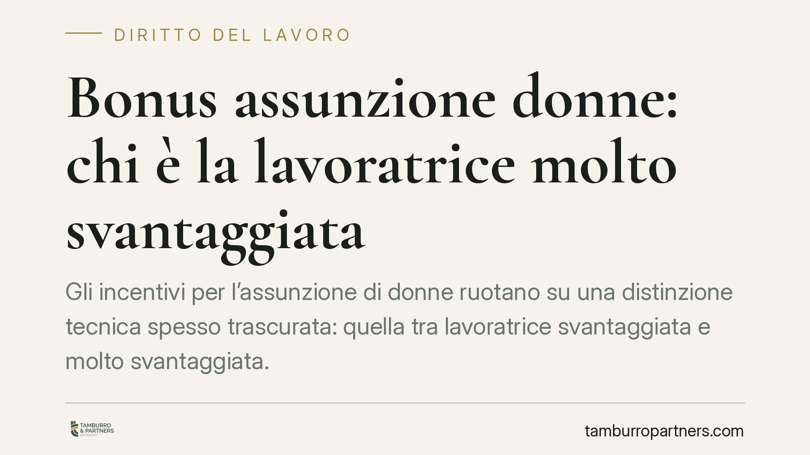

Bonus assunzione donne: chi è la lavoratrice "molto svantaggiata"
Gli incentivi per l'assunzione di donne ruotano su una distinzione tecnica spesso trascurata: quella tra lavoratrice "svantaggiata" e "molto svantaggiata". Da quella qualificazione dipendono la durata dell'esonero contributivo e la sua legittimità. Per il datore di lavoro un errore di inquadramento non è un dettaglio: può tradursi in recupero dei contributi in sede di verifica.

Il nodo: svantaggiata o molto svantaggiata?
Gli incentivi all'assunzione di lavoratrici si fondano su una definizione europea. Il Regolamento (UE) n. 651/2014, all'art. 2, punto 4), individua la "lavoratrice svantaggiata" attraverso una serie di sottocriteri alternativi: tra questi, l'assenza di impiego regolarmente retribuito da almeno sei mesi, l'appartenenza a fasce di età (under 25 oppure over 50), l'assenza di un diploma di scuola secondaria superiore, oppure l'occupazione in settori caratterizzati da un marcato squilibrio di genere.
La nozione di lavoratrice "molto svantaggiata" è invece contenuta nell'art. 2, punto 99) dello stesso Regolamento: si tratta, in sintesi, di chi è priva di impiego regolarmente retribuito da un periodo prolungato (di norma almeno ventiquattro mesi), oppure da almeno dodici mesi in presenza di ulteriori fattori di svantaggio.
La differenza non è formale. Alla qualificazione più grave corrisponde una tutela incentivante più ampia, tipicamente in termini di durata dell'esonero contributivo.
Il quadro normativo interno
Allo stato, la disciplina degli esoneri per l'assunzione di donne va letta alla luce dei provvedimenti effettivamente pubblicati in Gazzetta Ufficiale e delle circolari attuative dell'INPS. Segnaliamo che eventuali estremi normativi riferiti a interventi del 2026 vanno verificati caso per caso al momento della pubblicazione: finché una misura non è pubblicata e resa operativa con le relative istruzioni applicative, importi e requisiti non possono considerarsi definitivi.
È una cautela doverosa. Applicare un esonero sulla base di parametri non ancora consolidati espone al rischio di recupero.
Il principio di incrementalità
Un elemento resta costante negli incentivi all'occupazione: la regola dell'incremento occupazionale netto, disciplinata in via generale dall'art. 31 del D.Lgs. n. 150/2015. L'agevolazione spetta, di regola, solo se l'assunzione determina un aumento effettivo del numero dei dipendenti rispetto alla media del periodo precedente.
Non basta quindi assumere una lavoratrice che rientra nella definizione: occorre che l'inserimento non sia una mera sostituzione di personale uscito. La verifica va condotta con riferimento ai lavoratori equivalenti a tempo pieno.
Gli importi dell'esonero
Sul piano economico, l'esonero opera nel limite del massimale mensile previsto dalla singola misura. È qui che raccomandiamo la massima prudenza: le cifre che circolano nelle prime letture giornalistiche vanno riscontrate sul testo normativo e sulla circolare INPS di riferimento, che indicano la percentuale di esonero, il tetto mensile e la durata.
Comunicare al datore di lavoro un importo "certo" prima di questi riscontri significa costruire aspettative che il testo definitivo potrebbe smentire.
Cosa cambia per il datore di lavoro
Per l'impresa, il punto delicato è la documentazione dei requisiti. La qualificazione della lavoratrice come svantaggiata o molto svantaggiata deve poter essere provata: è il datore di lavoro a rispondere, in sede di verifica, della correttezza dell'inquadramento.
Un esonero applicato senza adeguato supporto documentale è un esonero fragile. In caso di controllo, l'INPS può disconoscere l'agevolazione e procedere al recupero dei contributi in sede di autoliquidazione, con i relativi oneri accessori.
Cosa fare in concreto
- Verifica la fonte normativa aggiornata: prima di applicare qualsiasi esonero, riscontra il testo pubblicato in Gazzetta Ufficiale e la circolare INPS attuativa, senza affidarti a sintesi giornalistiche.
- Qualifica con precisione la lavoratrice: distingui tra "svantaggiata" (art. 2, punto 4, Reg. UE 651/2014) e "molto svantaggiata" (punto 99), individuando il sottocriterio applicabile.
- Raccogli e conserva la documentazione: acquisisci le prove del requisito (stato di disoccupazione, storia contributiva, titolo di studio) e archiviale in vista di eventuali controlli.
- Controlla l'incremento occupazionale netto ai sensi dell'art. 31 D.Lgs. 150/2015, calcolando la media dei dipendenti del periodo di riferimento.
- Simula il rischio di recupero: prima di beneficiare dell'esonero, valuta l'impatto di un eventuale disconoscimento sull'autoliquidazione contributiva.
Conclusioni
Gli incentivi all'assunzione di donne restano uno strumento utile, ma la loro fruizione non è automatica. Il confine tra lavoratrice svantaggiata e molto svantaggiata, il rispetto dell'incremento occupazionale e la solidità documentale sono i tre fronti su cui si gioca la tenuta dell'agevolazione. Consigliamo di trattare ogni assunzione incentivata come una posizione potenzialmente soggetta a verifica.
---
Contributo informativo a cura di Tamburro & Partners - Avv. Giuseppe Tamburro. Non costituisce parere legale.
Ogni storia di lavoro ha i suoi tempi.
Se gestisci HR e vuoi un confronto su contenzioso, ispezioni o licenziamenti, scrivi allo studio. Ti rispondiamo entro un giorno lavorativo.